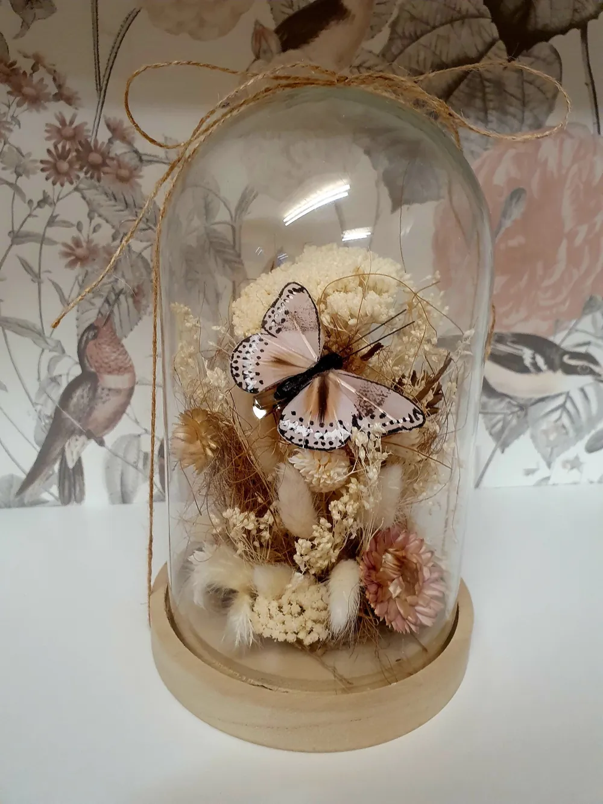
Fleurs séchées
Cloches & compositions
Des créations intemporelles, pensées pour durer dans la maison.
Art floral & produits de la ferme
Crée un cocon chaleureux chez toi grâce aux créations intemporelles en fleurs séchées et aux thés douillets.
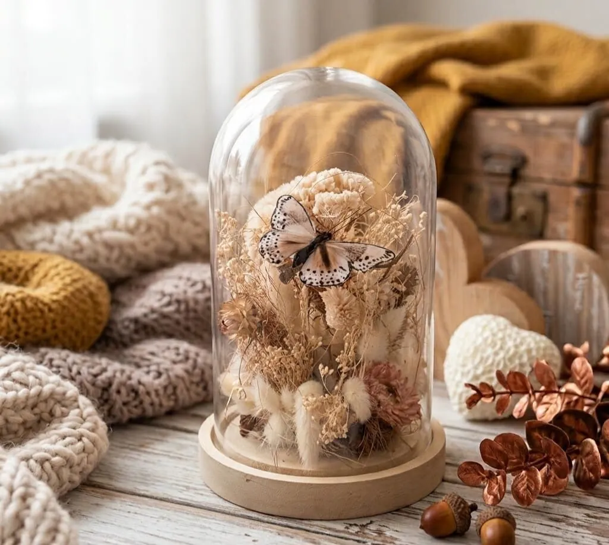
Fleurs séchées, montées à la main
Un lieu où la nature et la passion s'entremêlent, né d'un amour profond pour l'artisanat et les trésors du Jura.
Diplôme de fleuriste. Un métier qui connecte à la beauté et à la délicatesse des végétaux.
La cabane en self-service à la ferme, pour les produits de l'exploitation : œufs, viande… Puis les fleurs séchées, et le thé.
La boutique de Courtételle, en dépôt-vente avec 18 artisans de la région, et des objets coups de cœur choisis un à un.
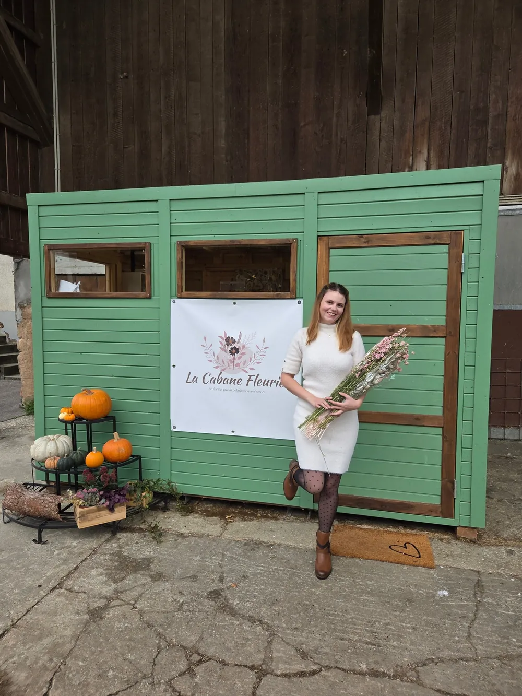
80 % de la boutique reste concentrée sur l'artisanat, avec des fournisseurs de la région autant que possible.

Des créations intemporelles, pensées pour durer dans la maison.
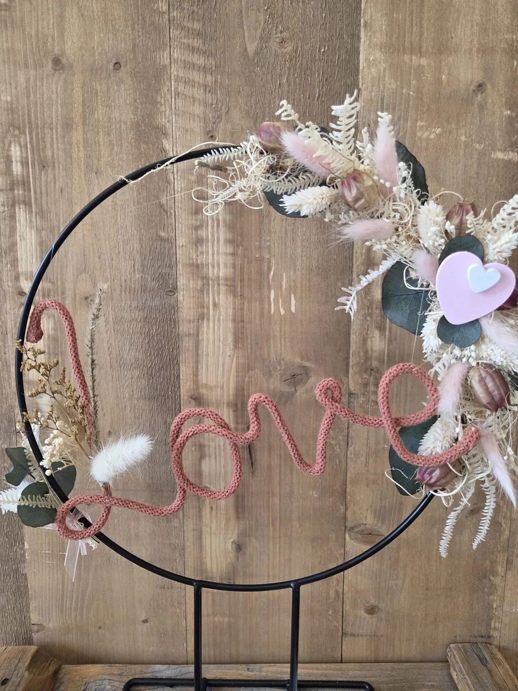
Fleurs séchées et mot en tricotin, à offrir ou à faire soi-même en atelier.
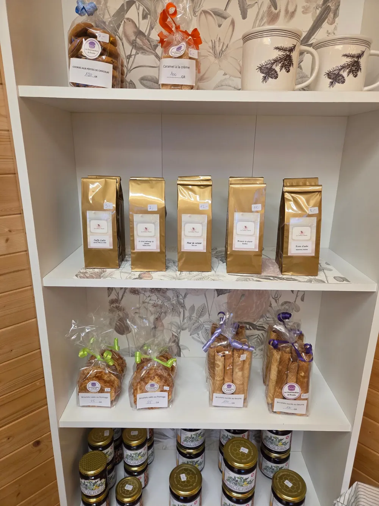
Fondue jurassienne, miel de Bressaucourt, gourmandises de la belle-mère, bougies artisanales…
Le thé est venu pour sa douceur et son réconfort. Chaque tasse, une pause pour le corps et l'esprit.
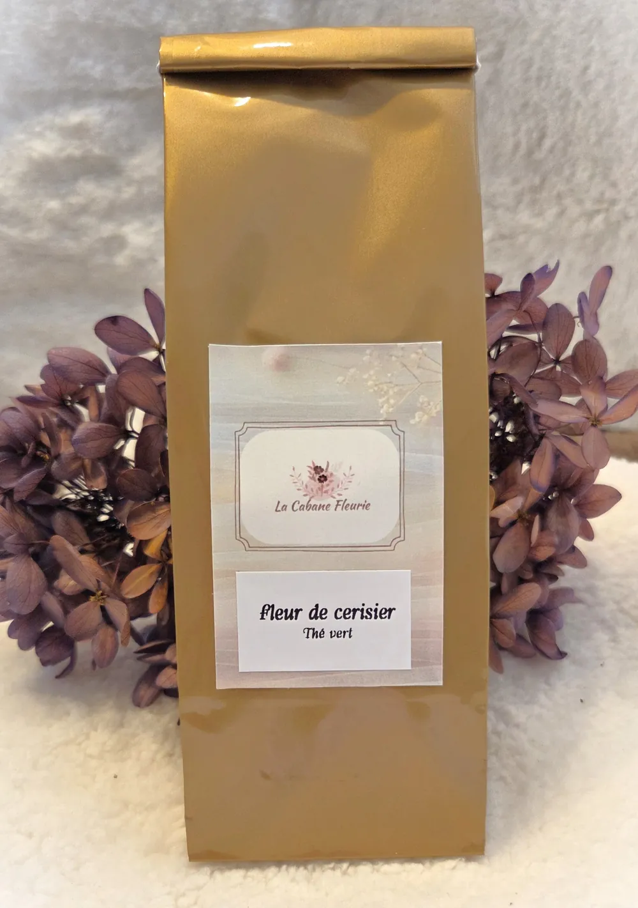
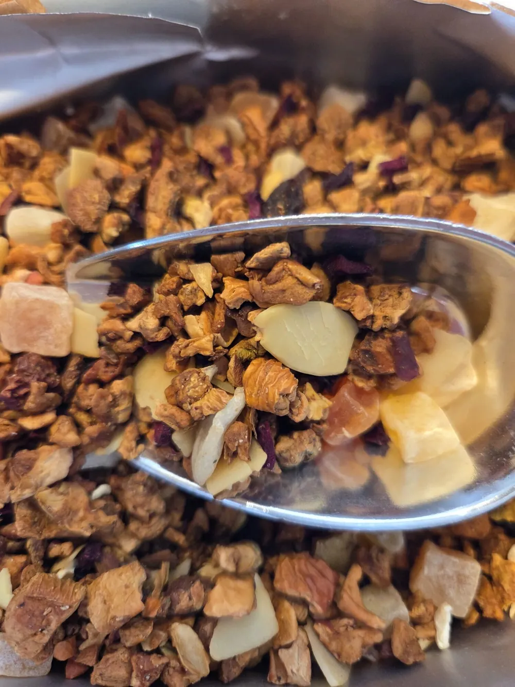
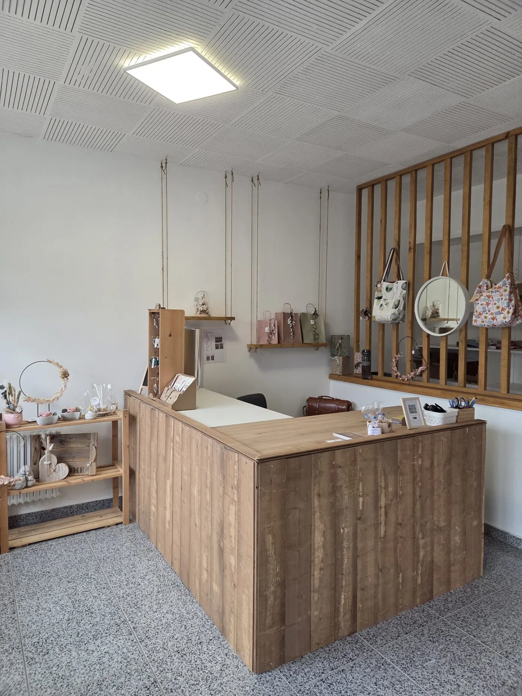
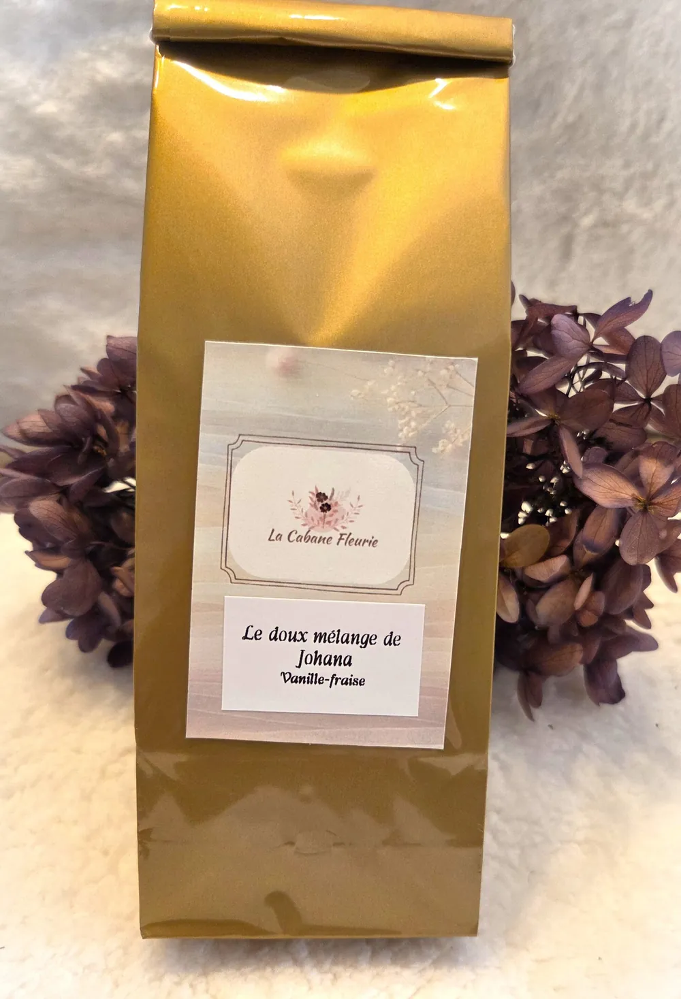
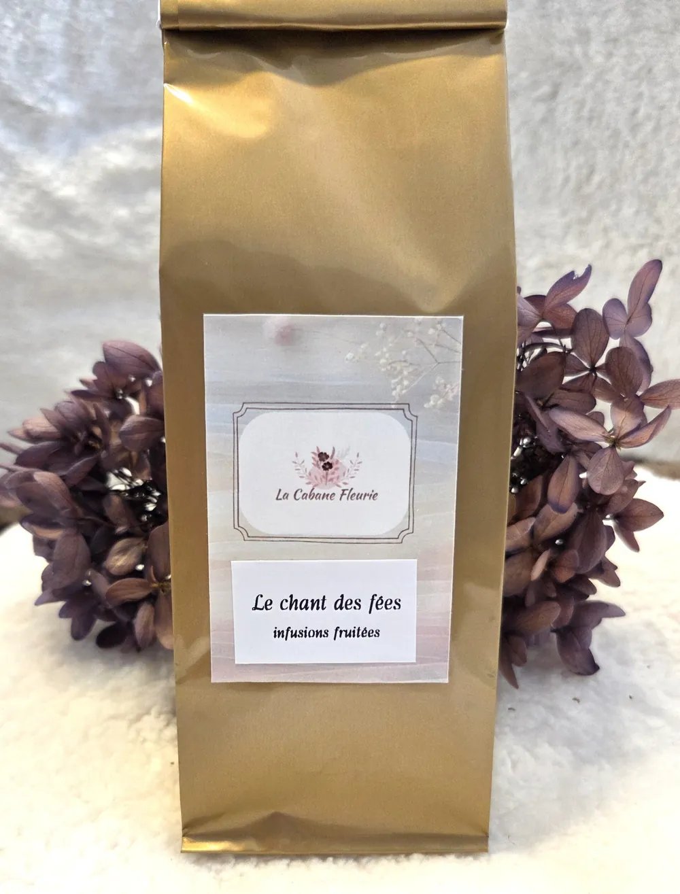
« Chaque visite à La Cabane Fleurie est une parenthèse enchantée. On y trouve une douceur incroyable et un véritable retour à la nature. »
Avis client
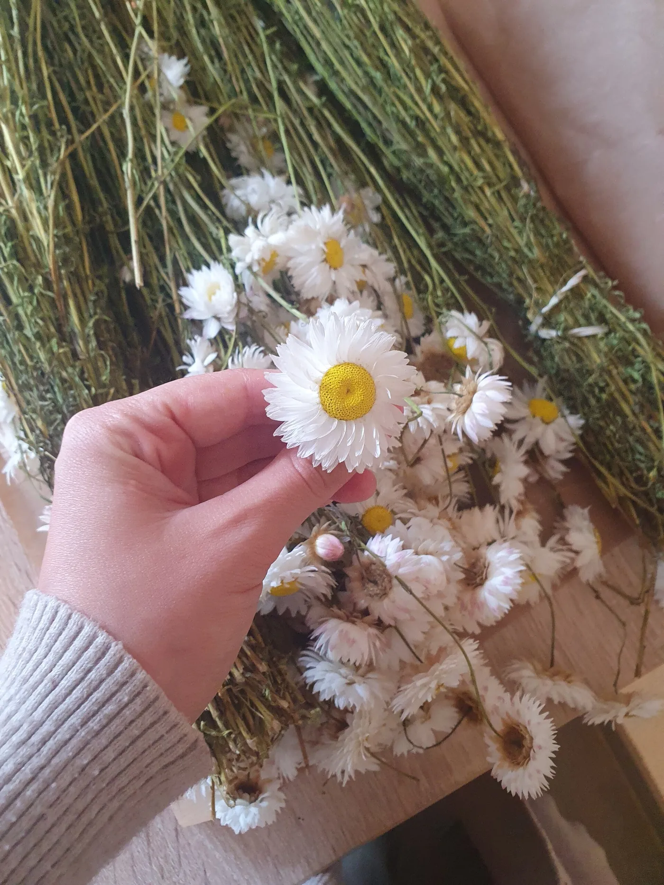
Atelier créatif
Des ateliers en fleurs séchées pour apprendre, se détendre et repartir avec une œuvre faite de ses propres mains, dans l'ambiance cosy de la boutique de Courtételle. Des gourmandises sont offertes à chaque atelier.
| Lundi | Fermé |
| Mardi | 9h–12h · 14h–18h |
| Mercredi | 9h–12h · 14h30–17h30 |
| Jeudi | 14h30–17h30 |
| Vendredi | 9h–12h · 14h–18h |
| Samedi | 10h–16h |
Les produits de notre exploitation agricole, en libre-service.
| Lundi – vendredi | 8h–20h |
| Samedi & dimanche | 8h–20h |
Thés et créations en fleurs séchées, expédiés entre 24 et 48 h.